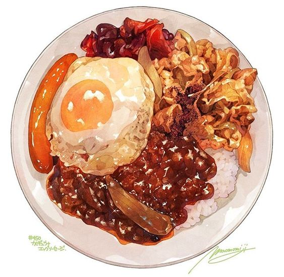

Curry Recipe

Ingredients
- Asparagus : 1 bundle
- Olive : 3 table spoon
- Grated Parmesian : 11/2 tablespoon
- Garlic Minced : 1 clove
- Sea salt : 1 teaspoon
- Ground Black Pepper : 1/2 teaspoon
- Lemon Juice : 1 tablespoon
Steps
- Preheat an oven to 425 degrees F (220 degrees C).
-
Place the asparagus into a mixing bowl, and drizzle with the olive oil.
Toss to coat the spears, then sprinkle with Parmesan cheese, garlic, salt, and pepper.
Arrange the asparagus onto a baking sheet in a single layer.
-
Bake in the preheated oven until just tender, 12 to 15 minutes depending on thickness.
Sprinkle with lemon juice just before serving.
Return to Main Page